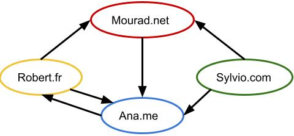

Un navigateur de recherche est un logiciel utilisé pour naviguer sur le web.
Lorsque vous surfez sur le web, les navigateurs enregistrent chronologiquement votre activité : sites visités, cookies, préférences, etc. Toutes ces informations composent l'historique et sont sauvegardées dans un fichier. L'intérêt premier est de simplifier la navigation de l'utilisateur : retrouver un site qui a été consulté, garder en mémoire les mots de passe de sites visités fréquemment, pré-remplir les formulaires d'inscription avec ses coordonnées personnelles, etc. Ces données restent cependant accessibles aux sites connectés.
La navigation privéeLa navigation privée ne rend pas invisible. Tant que le navigateur est sollicité pour visiter des sites, les cookies continuent d'être déposés et donc potentiellement de transmettre en temps réel des informations personnelles. Il en est de même pour votre historique de navigation ou encore les mots de passe enregistrés qui ne s'effacent qu'une fois que votre navigateur aura été fermé.
. . . . . . . . . . . . . . . . . . . . . . . . . . . . . . . . . . . . . . . . . . . . . . . . . . . . . . . . . . . . . . . . . . . . . . . . . . . . . . . . . . . . . . . . . . . . . . . . . . . . . . . . . . . . . . . . . . . . . . . . . . . . . . . . . . . . . . . . . . . . . . . . . . . . . . . .
. . . . . . . . . . . . . . . . . . . . . . . . . . . . . . . . . . . . . . . . . . . . . . . . . . . . . . . . . . . . . . . . . . . . . . . . . . . . . . . . . . . . . . . . . . . . . . . . . . . . . . . . . . . . . . . . . . . . . . . . . . . . . . . . . . . . . . . . . . . . . . . . . . . . . . . .
Lorsqu'un utilisateur accède à certains site web, un témoin de connexion, appelé cookie est stocké dans le navigateur de l'utilisateur. Les cookies fournissent à autrui des données concernant la navigation de l'utilisateur (sites visités, requêtes dans les moteurs de recherche, géolocalisation, etc). Ils facilitent ainsi la navigation et/ou apportent des fonctionnalités supplémentaires, comme la gestion de l'identification. Ils peuvent être utilisés pour présenter à l'utilisateur sur un site ou en dehors de celui-ci des publicités ciblées sur ses centres d'intérêt.
Il existe différentes catégories de cookies :
Ces cookies sont nécessaires pour fournir des fonctionnalités de base lorsque vous naviguez sur les sites web. Les identifiants de connexion ou le contenu du "panier" sur un site de e-commerce peuvent être enregistrés pour faciliter la connexion lors d'une prochaine visite.
Les icônes des réseaux sociaux couramment placées sur les pages contiennent des liens url qui permettent, au chargement de la page, d'activer les cookies du réseau social et de relier les contenus consultés au compte de l'utilisateur.
Ces cookies tracent les sites visités par l'utilisateur de façon à lui envoyer des informations et publicités ciblées.
La paramétrage des cookies s'effectue au niveau du navigateur.
Un moteur de recherche est un site web ou logiciel web qui permet de retrouver les informations sur le web.
. . . . . . . . . . . . . . . . . . . . . . . . . . . . . . . . . . . . . . . . . . . . . . . . . . . . . . . . . . . . . . . . . . . . . . . . . . . . . . . . . . . .
| Moteur de recherche | Présence d'une publicité en tête des résultats | Position du premier lien vers Wikipédia | Position du premier lien vers un média culturel | Position du premier lien vers le film |
| Qwant | ||||
| Yahoo ! |
Des robots ou crawler (programmes informatiques) parcourent le Web et indexent les pages à partir des mots qu'elles contiennent et en lien avec leur adresse url. Par exemple, l'index peut indiquer que le mot "Louvre" est utilisé que les pages 10, 27 et 157. Cela permet de gagner du temps de réponse face à la requête du visiteur. Toutes les pages ne sont pas sauvegardées. Certaines provenant de sites illégaux sont tout simplement blacklistées.
L'index permet de répondre aux requêtes des utilisateurs. Par exemple, si l'internaute recherche des information sur "informatique au lycée", le moteur recherchera dans son index, toutes les pages qui contiennent ces mots.
Le moteur de recherche utilisera ensuite un algorithme permettant de classer les réponses, chaque moteur de recherche possède son propre algorithme. Pour Google, cet algorithme s'appelle le pageRank.
. . . . . . . . . . . . . . . . . . . . . . . . . . . . . . . . . . . . . . . . . . . . . . . . . . . . . . . . . . . . . . . . . . . . . . . . . . . . . . . . . . . . . . . . . . . . . . . . . . . . . . . . . . . . . . . . . . . . . . . . . . . . . . . . . . . . . . . . . . . . . . . . . . . . . . . . . . . . . . . . . . . . . . . . . . . . . . . . . . . . . . . . . . . . . . . . . . . . . . . . . . . . . . . . . . . . . . . . . . . . . . . . . . . . . . . . . . . . . . . . . . . . . . . . . . . . . . . . . . . . . . . . . . . . . . . . . . . . . . . . . . . . . . . . . . . . . . . . . . . . . . . . . . . . . . . . . . . . . . . . . . . . . . . . . . . . . . . . . . . . . . . . . . . . . . . . . . . . . . . . . . . . . . . . . . . . . . . . . . . . . . . . . . . . . . . . . . . . . . . . . . . . . . . . . . . . . . . . . . . . . . . . . . . . . . . . . . . . . . . . . . . . . . . . . . . . . . . . . . . . . . . . . . . . . . . . . . . . . . . . . . . . . . . . . . . . . . . . . . . . . . . . . . . . . . . . . . . . . . . . . . . . . . . . . . . . . . . . . . . . . . . . . . . . . . . . . . . . . . . . . . . . . . . . . . . . . . . . . . . . . . . . . . . . . . . . . . . . . . . . . . . . . . . . . . . . . . . . . . . . . . . . . . . . . . . . . . . . . . . . . . . . . . . . . . . . . . . . . . . . . . . . .
. . . . . . . . . . . . . . . . . . . . . . . . . . . . . . . . . . . . . . . . . . . . . . . . . . . . . . . . . . . . . . . . . . . . . . . . . . . . . . . . . . . . . . . . . . . . . . . . . . . . . . . . . . . . . . . . . . . . . . . . . . . . . . . . . . . . . . . . . . . . . . . . . . . . . . . . . . . . . . . . . . . . . . . . . . . . . . . . . . . . . . . . . . . . . . . . . . . . . . . . . . . . . . . . . . . . . . . . . . . . . . . . . . . . . . . . . . . . . . . . . . . . . . . . . . . . . . . . . . . . . . . . . . . . . . . . . . . . . . . . . . . . . . . . . . . . . . . . . . . . . . . . . . . . . . . . . . . . . . . . . . . . . . . . . . . . . . . . . . . . . . . . . . . . . . . . . . . . . . . . . . . . . . . . . . . . . . . . . . . . . . . . . . . . . . . . . . . . . . . . . . . . . . . .
Une fois les données collectées par les robots, un algorithme va les classer selon plusieurs critères, comme le nombre de liens pointant vers une page. Le principe de fonctionnement est fondé sur le fait que plus un site est cité par d'autres sites, plus il sera considéré comme pertinent et donc plus son score sera élevé. Un bon score garantit une place de choix au site dans la page des résultats, c'est le référencement naturel.
Pour calculer un score, l'algorithme :

Le score du site A est de 2.5, celui du site B de 1.33, celui du site C est 2.33 et celui du site D de 1.83.
On obtient donc le classement ou l'ordre d'affichage est le suivant :
site A - site c - site D - site B
le navigateur le serveur les deux
l'importance des mots la longueur des pages la popularité des pages
Vrai Faux
Vrai Faux
Lucie a effectué des recherches sur le web dans le but d'acheter un billet d'avion. Le lendemain, alors qu'elle surf sur le web, des publicités pour des billets d'avion apparaissent sur les pages web qu'elle consulte.
. . . . . . . . . . . . . . . . . . . . . . . . . . . . . . . . . . . . . . . . . . . . . . . . . . . . . . . . . . . . . . . . . . . . . . . . . . . . . . . . . . . . . . . . . . . . . . . . . . . . . . . . . . . . . . . . . . . . . . . . . . . . . . . . . . . . . . . . . . . . . . . . . . . . . . . . . . . . . . . . . . . . . . . . . . . . . . . . . . . . . . . . . . . . . . . . . . . . . . . . . . . . . . . . . . . . . . . . . . . . . . . . . . . . . . . . . . . . . . . . . . . . . . . . . . . . . . . . . . . . . . . . . . . . . . . . . . . . . . . . . . . . . . . . . . . . . . . . . . . . . . . . . . . . . . . . . . . . . . . . . . . . . . . . . . . . . . . . . . . . . . . . . . . . . . . . . . . . . . . . . . . . . . . . . . . . . . . . . . . . . . . . . . . . . . . . . . . . . . . . . . . . . . . .
Lucie met plusieurs jours à se décider et observe que les prix des billets augmentent à chacune de ses visites.
. . . . . . . . . . . . . . . . . . . . . . . . . . . . . . . . . . . . . . . . . . . . . . . . . . . . . . . . . . . . . . . . . . . . . . . . . . . . . . . . . . . . . . . . . . . . . . . . . . . . . . . . . . . . . . . . . . . . . . . . . . . . . . . . . . . . . . . . . . . . . . . . . . . . . . . . . . . . . . . . . . . . . . . . . . . . . . . . . . . . . . . . . . . . . . . . . . . . . . . . . . . . . . . . . . . . . . . . . . . . . . . . . . . . . . . . . . . . . . . . . . . . . . . . . . . . . . . . . . . . . . . . . . . . . . . . . . . . . . . . . . . . . . . . . . . . . . . . . . . . . . . . . . . . . . . . . . . . . . . . . . . . . . . . . . . . . . . . . . . . . . . . . . . . . . . . . . . . . . . . . . . . . . . . . . . . . . . . . . . . . . . . . . . . . . . . . . . . . . . . . . . . . . . .
. . . . . . . . . . . . . . . . . . . . . . . . . . . . . . . . . . . . . . . . . . . . . . . . . . . . . . . . . . . . . . . . . . . . . . . . . . . . . . . . . . . . . . . . . . . . . . . . . . . . . . . . . . . . . . . . . . . . . . . . . . . . . . . . . . . . . . . . . . . . . . . . . . . . . . . . . . . . . . . . . . . . . . . . . . . . . . . . . . . . . . . . . . . . . . . . . . . . . . . . . . . . . . . . . . . . . . . . . . . . . . . . . . . . . . . . . . . . . . . . . . . . . . . . . . . . . . . . . . . . . . . . . . . . . . . . . . . . . . . . . . . . . . . . . . . . . . . . . . . . . . . . . . . . . . . . . . . . . . . . . . . . . . . . . . . . . . . . . . . . . . . . . . . . . . . . . . . . . . . . . . . . . . . . . . . . . . . . . . . . . . . . . . . . . . . . . . . . . . . . . . . . . . . .
Exercice 3 : PageRankEmma veut créer un blog sur le pilotage de drone et souhaiterait que ses articles atteignent un large public. Pour cela, il faudrait que son blog soit bien référencé par Google. Pour maximiser son score, elle veut demander à l'un de ses quatre amis (représentés dans le réseau suivant) d'insérer sur son site un lien pointant vers son blog.
. . . . . . . . . . . . . . . . . . . . . . . . . . . . . . . . . . . . . . . . . . . . . . . . . . . . . . . . . . . . . . . . . . . . . . . . . . . . . . . . . . . . . . . . . . . . . . . . . . . . . . . . . . . . . . . . . . . . . . . . . . . . . . . . . . . . . . . . . . . . . . . . . . . . . . . . . . . . . . . . . . . . . . . . . . . . . . . . . . . . . . . . . . . . . . . . . . . . . . . . . . . . . . . . . . . . . . . . . . . . . . . . . . . . . . . . . . . . . . . . . . . . . . . . . . . . . . . . . . . . . . . . . . . . . . . . . . . . . . . . . . . . . . . . . . . . . . . . . . . . . . . . . . . . . . . . . . . . . . . . . . . . . . . . . . . . . . . . . . . . . . . . . . . . . . . . . . . . . . . . . . . . . . . . . . . . . . . . . . . . . . . . . . . . . . . . . . . . . . . . . . . . . . . . . . . . . . . . . . . . . . . . . . . . . . . . . . . . . . . . . . . . . . . . . . . . . . . . . . . . . . . . . . . . . . . . . . . . . . . . . . . . . . . . . . . . . . . . . . . . . . . . . . . . . . . . . . . . . . . . . . . . . . . . . . . . . . . . . . . . . . . . . . . . . . . . . . . . . . . . . . . . . . . . . . . . . . . . . . . . . . . . . . . . . . . . . . . . . . . . . . . . . . . . . . . . . . . . . . . . . . . . . . . . . . . . . . . . . . . . . . . . . . . . . . . . . . . . . . . . . . . . . . . . . . . . . . . . . . . . . . . . . . . . . . . . . . . . . . . . . . . . . . . . . . . . . . . . . . . . . . . . . . . . . . . . . . . . . . . . . . . . . . . . . . . . . . . . . . . . . . . . . . . . . . . . . . . . . . . . . . . . . . . . . . . . . . . . . . . . . . . . . . . . . . . . . . . . . . . . . . . . . . . . . . . . . . . . . . . . . . . . . . . . . . . . . . . . . . . . . . . . . . . . . . . . . . . . . . . . . . . . . . . . . . . . . . . . . . . . . . . . . . . . . . . . . . . . . . . . . . . . . . . . . . . . . . . . . . . . . . . . . . . . . . . . . . . . . . . . . . . . . . . . . . . . . . . . . . . . . . . . . . . . . . . . . . . . . . . . . . . . . . . . . . . . . . . . . . . . . . . . . . . . . . . . . . . . . . . . . . . . . . . . . . . . . . . . . . . . . . . . . . . . . . . . . . . . . . . . . . . . . . . . . . . . . . . . . . . . . . . . . . . . . . . . . . . . . . . . . . . . . . . . . . . . . . . .
| Nom de l'ami | PageRank |
| Mourad | |
| Robert | |
| Ana | |
| Sylvio |
. . . . . . . . . . . . . . . . . . . . . . . . . . . . . . . . . . . . . . . . . . . . . . . . . . . . . . . . . . . . . . . . . . . . . . . . . . . . . . . . . . . . . . . . . . . . . . . . . . . . . . . . . . . . . . . . . . . . . . . . . . . . . . . . . . . . . . . . . . . . . . . . . . . . . . . . . . . . . . . . . . . . . . . . . . . . . . . . . . . . . . . . . . . . . . . . . . . . . . . . . . . . . . . . . . . . . . . . . . . . . . . . . . . . . . . . . . . . . . . . . . . . . . . . . . . . . . . . . . . . . . . . . . . . . . . . . . . . . . . . . . . . . . . . . . . . . . . . . . . . . . . . . . . . . . . . . . . . . . . . . . . . . . . . . . . . . . . . . . . . . . . . . . . . . . . . . . . . . . . . . . . . . . . . . . . . . . . . . . . . . . . . . . . . . . . . . . . . . . . . . . . . . . . .